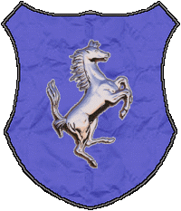
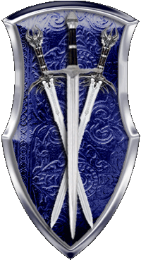
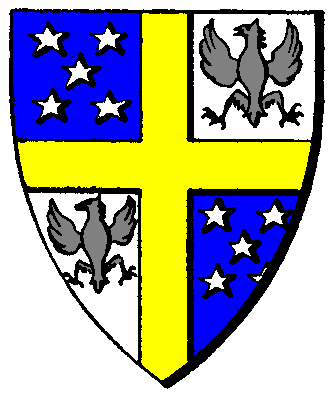

| Übersicht,
Allgemeines |
|
Petition an die SL (164  ) )
|
| Titania Greenleafxxx (RIP) |
*unterschreib*
Markgräfin Titania Greenleaf
Zur 16. Stunde am 72.Saatmond im Jahre 426 |
17.09.06 23:11
|
|
| Elrohir von Imladris (RIP) |
unterschreibt
Markgraf Elrohir von Imladris
Zur 16. Stunde am 72.Saatmond im Jahre 426 |
17.09.06 23:15
|
|
| Aryn Greifenherz (RIP) |
unterschreibt
Baron Aryn Greifenherz
Zur 16. Stunde am 72.Saatmond im Jahre 426 |
17.09.06 23:18
|
|
Zipfelmütz von Dahén
 |
*unterschreib*
Bin grundsätzlich für Queste, aber nicht wenn sie derart stark in das Spielgeschehen eingreifen und nicht wenn man an ihnen zwangsweise teilnehmen muss.
Graf Zipfelmütz von Dahén
Zur 17. Stunde am 72.Saatmond im Jahre 426 |
17.09.06 23:23
 |
|
| Andianer von Hexenhain (RIP) |
*krackelt seinen Namen dahin*
Andianer,
Kardinal im Dienste des einzig wahren Glaubens an Urvan
Zur 17. Stunde am 72.Saatmond im Jahre 426 |
17.09.06 23:29
|
|
Arvid Mirdok
 |
Da unterschreibe ich doch glatt auch mal
Baron Loin Spirit
Zur 17. Stunde am 72.Saatmond im Jahre 426 |
17.09.06 23:29
|
|
| Gahwain (RIP) |
auch underschreib.
Graf Glade Hornfell Kytil
Zur 17. Stunde am 72.Saatmond im Jahre 426 |
17.09.06 23:30
|
|
| Lilokel ok Schnjokel (RIP) |
Naja, eigentlich würde ich gerne abwarten wie sich das so entwickelt, aber allgemein halte ich Quests an denen man nicht freiwillig teilnimmt für überflüssig, denn den algemeinen Spielspaß fördern sie einfach nicht, diskussion hin oder her.
Daher *unterschreibt*
Markgräfin Lilokel ok Schnjokel
Zur 17. Stunde am 72.Saatmond im Jahre 426 |
17.09.06 23:31
|
|
Custos von Dignitas
 |
und olé, denn spätestens in 3 tage ist meine stadt fällig.
Markgraf Custos von Dignitas
Zur 18. Stunde am 72.Saatmond im Jahre 426 |
17.09.06 23:36
|
|
| Ryanthusar (RIP) |
jo, so nicht
Freiherr Ryanthusar,
Hohepriester im Dienste des einzig wahren Glaubens an Maki
Zur 18. Stunde am 72.Saatmond im Jahre 426 |
17.09.06 23:39
|
|
| Brendan (RIP) |
Ich bin für die Quest.
Sir Brendan
Zur 18. Stunde am 72.Saatmond im Jahre 426 |
17.09.06 23:46
|
|
Laurin
 |
Ich stimme Brendan zu:
für den/die/das Quest
Freiherr Laurin,
Kardinal im Dienste des einzig wahren Glaubens an Urvan
Zur 19. Stunde am 72.Saatmond im Jahre 426 |
17.09.06 23:49
|
|
| Mia von Tacheless (RIP) |
Ich finde PaktiererRP eingeschränkt genug. Wartet doch einfach mal ne Runde ab. Denke die SL wird die Quest nicht bewilligt haben, wenn sie so 100% einseitig ist, wie sie hier dargestellt wird.
Ich bin dafür: Lasst sie laufen!
Lady Mia von Tacheless
Zur 19. Stunde am 72.Saatmond im Jahre 426 |
17.09.06 23:52
|
|
| Perilax Kriegsschäde (RIP) |
Lasst sie laufen!
Für die Quest!
Kjeld
Zur 19. Stunde am 72.Saatmond im Jahre 426 |
17.09.06 23:57
|
|
| Diamond von Frankental (RIP) |
Klar gegen das.
die für sind hier falschen Beitrag mal anmerk)
Baron Diamond von Frankental
Zur 19. Stunde am 72.Saatmond im Jahre 426 |
17.09.06 23:57
|
|
| Darienn (RIP) |
Absolut gegen solch eine "Art" der Quest
Darienn
Zur 20. Stunde am 72.Saatmond im Jahre 426 |
18.09.06 0:13
|
|
| Smoin cónuî Amdîr (RIP) |
Ich möchte nur anmerken, dass hier eine gewisse Befangenheit herrschen wird, zumindest seitens einiger Personen, da die Wahl nicht geheim ist. Daher wäre ich dafür einen richtige Abstimmung zu machen...
Graf Smoin cónuî Amdîr
Zur 21. Stunde am 72.Saatmond im Jahre 426 |
18.09.06 0:16
|
|
| Biba Butzemann (RIP) |
*eifrig unterschreib*
Sir Thor von Asgard
Zur 17. Stunde am 73.Saatmond im Jahre 426 |
18.09.06 5:03
|
|
| Levthan Araxes (RIP) |
*unterzeichnet*
Fürst Levthan
Zur 17. Stunde am 73.Saatmond im Jahre 426 |
18.09.06 5:05
|
|
| Georgos (RIP) |
bin ebenfalls gegen die Quest *unterschreibt*
Georgos
Zur 23. Stunde am 73.Saatmond im Jahre 426 |
18.09.06 6:29
|
|
| Ardán Schwarzauge (RIP) |
*unterschreibt*
Pfalzgraf Ardán Fálmanôr von Nerôná
Zur 1. Stunde am 74.Saatmond im Jahre 426 |
18.09.06 6:51
|
|
| Revlis sad Lemru (RIP) |
*unterschreibt*
Revlis sad Lemru
Zur 5. Stunde am 74.Saatmond im Jahre 426 |
18.09.06 7:51
|
|
| Kayhal (RIP) |
*unterschreib* wech mit den mist.
Kayhal
Zur 5. Stunde am 74.Saatmond im Jahre 426 |
18.09.06 7:53
|
|
| Tiryara (RIP) |
*unterschreib*
Tiryara
Zur 6. Stunde am 74.Saatmond im Jahre 426 |
18.09.06 8:10
|
|
Solara
 |
*Unterschreibt*
Gräfin Solara
Zur 7. Stunde am 74.Saatmond im Jahre 426 |
18.09.06 8:19
|
|
| Sérafina Ildîrián (RIP) |
Sehe es wie Lilokel..
Eigentlich würde ich gerne abwarten wie sich das so entwickelt, aber allgemein halte ich Quests an denen man nicht freiwillig teilnimmt für überflüssig.
Daher *seufzend unterschreibt*
Pfalzgräfin Sérafina Ildîrián
Zur 7. Stunde am 74.Saatmond im Jahre 426 |
18.09.06 8:23
|
|
| Polluxi (RIP) |
Dito
Markgraf Polluxi
Zur 8. Stunde am 74.Saatmond im Jahre 426 |
18.09.06 8:30
|
|
Holgrîm
 |
*unterschreibt auch*
Baron HolliMandela
Zur 10. Stunde am 74.Saatmond im Jahre 426 |
18.09.06 9:02
|
|
| Narndil Biunda v. Tacheless (RIP) |
*Stift schnapp und schwungvoll unterschreib*
Narndil Biunda
Zur 12. Stunde am 74.Saatmond im Jahre 426 |
18.09.06 9:34
|
|
| Laurelin of Dórthoníôn (RIP) |
*setzt ihre Unterschrift ebenfalls unter die vielen anderen*
Laurelin of Dórthoníôn
Zur 17. Stunde am 74.Saatmond im Jahre 426 |
18.09.06 10:35
|
|
| Daria Coron (RIP) |
*Unterschreibt*
Lady Daria von Luciferûs
Zur 17. Stunde am 74.Saatmond im Jahre 426 |
18.09.06 10:36
|
|
| Andraste vom Urvanfels (RIP) |
*unterschreib*
Markgraf Andraste vom Urvanfels
Zur 17. Stunde am 74.Saatmond im Jahre 426 |
18.09.06 10:42
|
|
| Middyn Faraldar (RIP) |
*unterschreib*
Pfalzgraf Middyn Faraldar
Zur 20. Stunde am 74.Saatmond im Jahre 426 |
18.09.06 11:28
|
|
Almera
 |
xxx
Aredhel Nalmeena,
Hohepriesterin im Dienste des einzig wahren Glaubens an Pheron
Zur 21. Stunde am 74.Saatmond im Jahre 426 |
18.09.06 11:29
|
|
Stone
 |
*unterschreib*
Stone
Zur 4. Stunde am 75.Saatmond im Jahre 426 |
18.09.06 13:12
|
|
| Nai`hra von Borbra (RIP) |
Hier rächt sich nun der frühere Fehler Seitens der Spielleitung, dass sie auf dauerhaftes Gemecker Seitens der Spieler mit Änderung eingegangen sind (wie z.B. Wetter)...
Es hat sich offensichtlich die Meinung verbreitet, dass man nur laut und intensiv genug keifen muss, dann wird sich die Spielleitung schon beugen.
Und dies zu versuchen ist ja auch der einfachere Weg im Vergleich dazu sich mit gegebenen Umständen zu arrangieren und/oder sich an der Quest zu beteiligen.
*die Gegenpetition unterschreiben geht*
Nai`hra von Borbra
Zur 8. Stunde am 75.Saatmond im Jahre 426 |
18.09.06 14:04
|
|
| Jesta (RIP) |
So, haben sich alle Powergamer geoutet, jetzt wieder husch husch in den Buddelkasten und weiterplärren
oder
kapiert endlich, dass es eine Frechheit ist, was ihr hier probiert über die Bühne zu bringen...
Jesta
Zur 8. Stunde am 75.Saatmond im Jahre 426 |
18.09.06 14:14
|
|
| Brunhilde (RIP) |
Der Schrott Quest wohl eine unverschämtheit nun geht euren Dämon anweinen.
Lady Brunhilde,
Kardinälin im Dienste des einzig wahren Glaubens an Bendur
Zur 8. Stunde am 75.Saatmond im Jahre 426 |
18.09.06 14:15
|
|
| Liliana (RIP) |
Aaah Brunhilde ist auch eine von der Sorte die super trennen kann und für die der gegenseitige Respekt das höchste Gut im Spiel ist :)
Lady Liliana
Zur 9. Stunde am 75.Saatmond im Jahre 426 |
18.09.06 14:19
|
|
| Alássia S. Cobar (RIP) |
*auch mal unterschreibt und denkt das es wohl kaum bescheuertere Sachen gibt*
Pfalzgräfin Alássia Târmundor
Zur 10. Stunde am 75.Saatmond im Jahre 426 |
18.09.06 14:31
|
|
| Simia Magicus (RIP) |
*unterschreibt*
Simia Magicus,
Priester im Dienste des einzig wahren Glaubens an Urvan
Zur 12. Stunde am 75.Saatmond im Jahre 426 |
18.09.06 15:04
|
|
Stryke
 |
*unterschreibt*
Stryke,
Priester im Dienste des einzig wahren Glaubens an Urvan
Zur 18. Stunde am 75.Saatmond im Jahre 426 |
18.09.06 16:33
|
|
| king of borg (RIP) |
*unterschreibt*
king of borg
Zur 23. Stunde am 75.Saatmond im Jahre 426 |
18.09.06 17:33
|
|
| Gryphios Pridorius (RIP) |
*unterschreibt*
Fürst Gryphios Pridorius
Zur 3. Stunde am 76.Saatmond im Jahre 426 |
18.09.06 18:32
|
|
| Caiome Greenleaf (RIP) |
*auch gegen die Quest ist und unterschreibt*
Markgräfin Caiome Greenleaf
Zur 6. Stunde am 76.Saatmond im Jahre 426 |
18.09.06 19:21
|
|
| Ingrasch Goldbart (RIP) |
*unterschreibt*
Ingrasch Goldbart,
Priester im Dienste des einzig wahren Glaubens an Urvan
Zur 7. Stunde am 76.Saatmond im Jahre 426 |
18.09.06 19:25
|
|
Cooper
 |
*unterschreibt*
Cooper,
Kardinälin im Dienste des einzig wahren Glaubens an Pheron
Zur 8. Stunde am 76.Saatmond im Jahre 426 |
18.09.06 19:41
|
|
| Cadhar (RIP) |
*unterschreibt*
Und zwar,
ich bin für Quests, ganz eindeutig
auch für quests bei denen man zwangsweise teilnehmen muss.
Aber nicht für quests bei denen man (ich muss zuegeben ichnhab mich nicht eingehend damit außeinandergesetzt) nichts gegen die auswirkungen tun kann... von wegen gegenrituial oder ähnliches
Baron Cadhar
Zur 8. Stunde am 76.Saatmond im Jahre 426 |
18.09.06 19:49
|
|
| Thormay Macedon II (RIP) |
*auch unterschreibt*
Zwangsquesten in dieser Form sind sicher keine Bereicherung des Spielspasses.
Freiherr Thormay Macedon II,
Kardinal im Dienste des einzig wahren Glaubens an Urvan
Zur 22. Stunde am 78.Saatmond im Jahre 426 |
19.09.06 10:13
|
|
| Foreva (RIP) |
*setzt ebenfalls ihre unterschrift darunter*
Pfalzgräfin Foreva
Zur 23. Stunde am 78.Saatmond im Jahre 426 |
19.09.06 10:25
|
|
| Patrizius Seewind (RIP) |
*unterschreibt*
Patrizius Seewind
Zur 17. Stunde am 79.Saatmond im Jahre 426 |
19.09.06 14:38
|
|
| Beliandra Cascus (RIP) |
auch auf die Gefahr hin mich unbeliebt zu machen...
Ich bin dafür und deshalb : Keine Unterschrift
Beliandra de Arsakes
Zur 18. Stunde am 79.Saatmond im Jahre 426 |
19.09.06 14:49
|
|
| Florina Flinkfuß (RIP) |
*unterschreibt*
Florina Flinkfuß,
Kardinälin im Dienste des einzig wahren Glaubens an Maki
Zur 23. Stunde am 79.Saatmond im Jahre 426 |
19.09.06 16:07
|
|
| Melindor (RIP) |
na dann unterschreib ich auch mal...
Melindor
Zur 9. Stunde am 80.Saatmond im Jahre 426 |
19.09.06 18:25
|
|
| Norion Taronshield (RIP) |
*unterschreib* Gegenritual!
Graf Norion Taronshield
Zur 6. Stunde am 84.Saatmond im Jahre 426 |
20.09.06 16:03
|
|
| Lazarus Meara (RIP) |
"Graf Norion Taronshield
Zur 6. Stunde am 84.Saatmond im Jahre 426"
Seid wann steht sowas eigentlich in einem non RP Bereich? o.O
Arvin Elrohir
Zur 2. Stunde am 85.Saatmond im Jahre 426 |
20.09.06 20:49
|
|
| Sâlía Séregon (RIP) |
seitdem der beitrag mit rp-formatierung verschoneb wurde ^^
und norion (und die anderen), nach dem gegenritual wird ig doch schon gesucht, soweit ich sehe... man kann also was dagegen tun... wenn man denn was dagegen tun will...
Sâlía A´nandaval,
Kardinälin im Dienste des einzig wahren Glaubens an Bendur
Zur 2. Stunde am 85.Saatmond im Jahre 426 |
20.09.06 20:50
|
|
| Silberbart (RIP) |
Habe es gerade erst mitbekommen das ich mal etwas mehr Bücher horten sollte^^
Daher Unterschreibe ich dies einmal
Pfalzgraf Silberbart
Zur 8. Stunde am 85.Saatmond im Jahre 426 |
20.09.06 22:17
|
|
| Olaf Thrall Cleverarm (RIP) |
*holt seine Buntstift raus, sucht noch nach einem freien Platz und schreibt auch seinen Namen auf die große Liste*
Freiherr Olaf Thrall Cleverarm,
Priester im Dienste des einzig wahren Glaubens an Urvan
Zur 11. Stunde am 85.Saatmond im Jahre 426 |
20.09.06 22:59
|
|
| Atalante Balan (RIP) |
~quetscht seinen Namen hinzu~
Ich bin scho finnanziell nich gut dran und dann wird mir meine eintzigste wirkliche Einnahmequelle genommen, zudem bin ich BM...
Baron Atalante Balan
Zur 21. Stunde am 86.Saatmond im Jahre 426 |
21.09.06 6:47
|
|
| Kungol Seebeißer (RIP) |
*unterschreibt*
Esnabur,
Hohepriester im Dienste des einzig wahren Glaubens an Bendur
Zur 5. Stunde am 89.Saatmond im Jahre 426 |
21.09.06 20:05
|
|
kreuzi
 |
endlich kommt mal etwas leben und abwechselung rein. vermisse nebst solch quests ein paar spassige invasionen von orks oder minos *gg*
*weitere tinte spart und seine unterschrift weglaesst*
kreuzi,
Hohepriester im Dienste des einzig wahren Glaubens an Maki
Zur 15. Stunde am 89.Saatmond im Jahre 426 |
21.09.06 22:07
|
|
| Huebich von Antin (RIP) |
*unterschreibt*
Markgraf Huebich von Antin
Zur 4. Stunde am 1.Blumenmond im Jahre 426 |
22.09.06 6:46
|
|
Übersicht,
Allgemeines
|